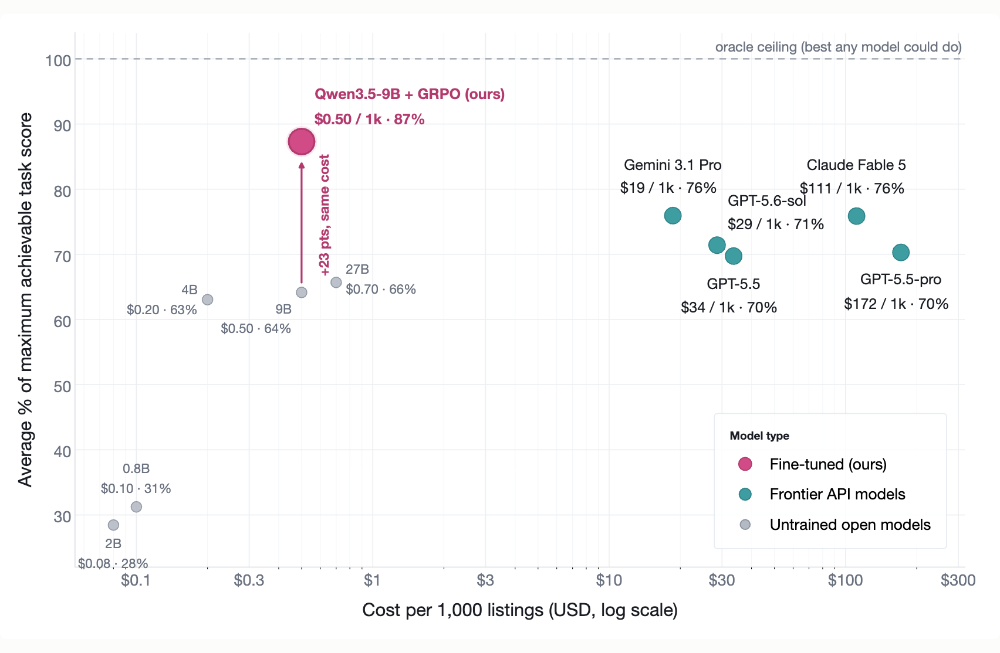
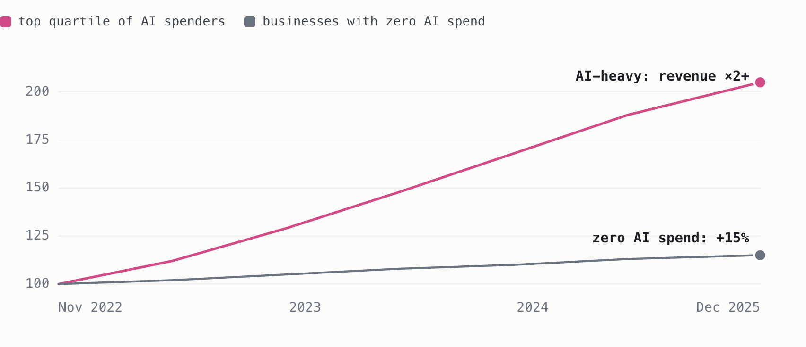
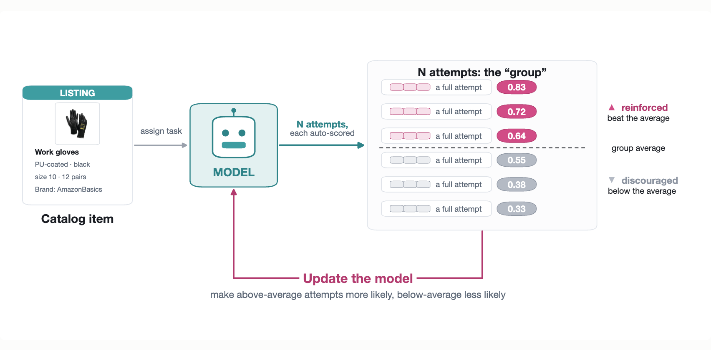
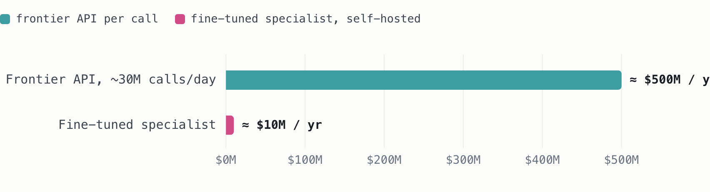
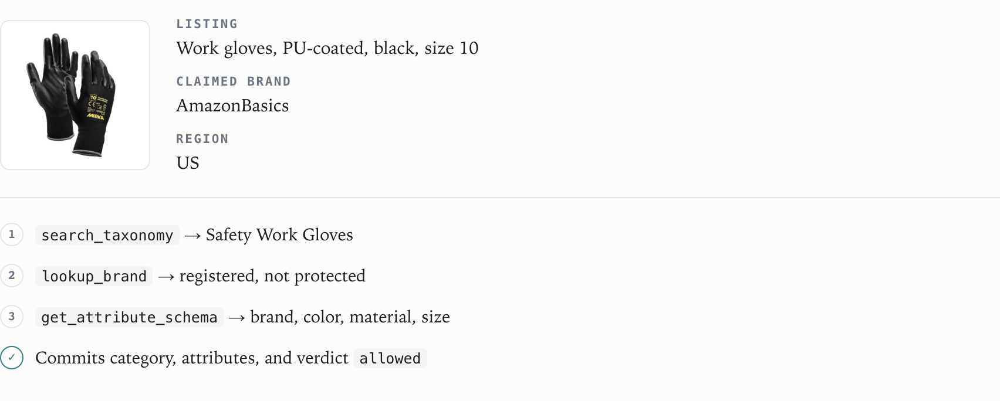
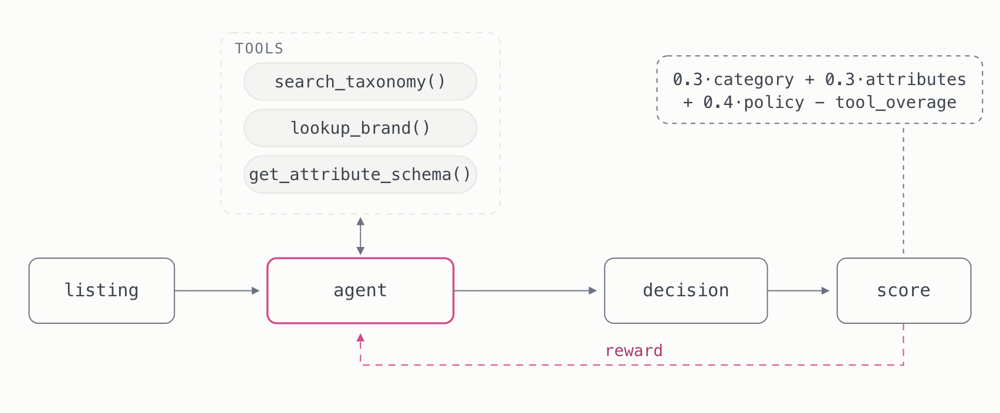
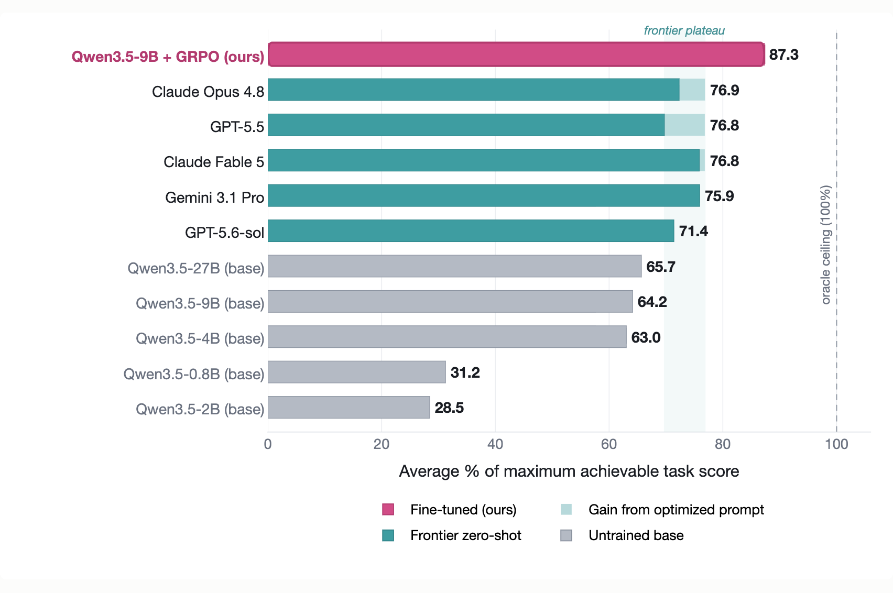
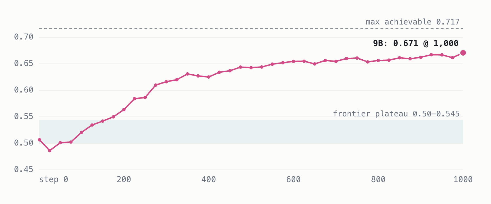
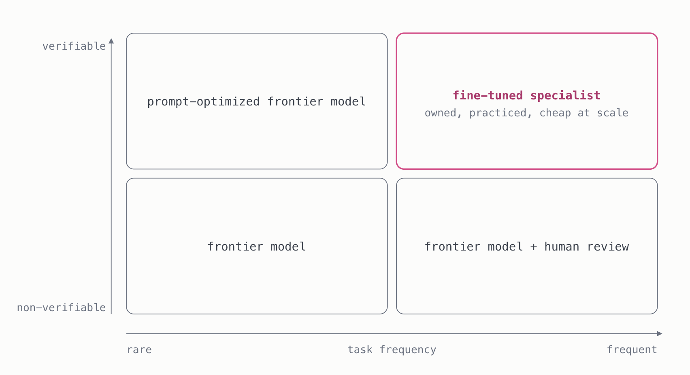

Cost vs. quality on catalog integrity

Part I
Everyone asked the same question
Since ChatGPT launched in 2022, business leaders have been asking the same question: what can AI do for us? The answer began with low-risk tasks: summarizing documents, drafting emails, producing first drafts that a human would edit.
It quickly moved into higher-value cognitive work, such as software development and content generation, and grew into more ambitious projects, like attempts to build an AI company brain, a system connected to internal knowledge, data, and tools that could coordinate work and eventually operate parts of the business autonomously.
While a lot of time, energy and tokens have been invested in AI adoption, measurable outcomes have barely been achieved at scale. However, some companies embraced being AI-first and saw enormous gains in productivity, revenue, and cost, while others lagged behind or failed to change their organizations enough to reach high ROI.
Recent data from corporate expense management platform Ramp reveals a stark contrast in performance: the top quartile of companies investing in AI saw their revenue more than double between November 2022 and December 2025, while businesses with zero AI expenditure experienced a mere 15% increase.
Top AI adopters outperform across industries

There are many reasons why AI has done wonders for some companies while others have struggled to see the return on their investment, but research primarily points in five directions.
Redesign the process, not just the task
Becoming AI-first means rethinking how the work is structured, not dropping a model into a workflow built around people: what gets approved, who reviews what, and which handoffs still need a human. Where the process stays untouched, legacy bottlenecks absorb the productivity gains before they reach the P&L. In McKinsey's 2025 survey of organizations using gen AI, workflow redesign was the attribute most correlated with EBIT impact, and only 21% of them had redesigned any workflow at all.
Incentivize experimentation
Models, tooling and best practices change weekly, so last quarter's setup is rarely still the right one. That only gets picked up if people are rewarded for trying things and reporting what failed, not just for shipping. Technical teams are the natural place to start, since they see the same problems recur across functions and can tell which of them a model can actually take over.
Provide tailored business context
Prompt engineering and retrieval can inject business context at call time, but doing it well is its own engineering program: getting to the data, enforcing access controls on what each request may see, building retrieval that surfaces the right evidence, and managing a context window that models use unevenly as it grows.
Measure usage and impact
Every AI line item eventually meets the CFO question: what did this change, and was it worth it? In most deployments, nobody can answer it: there is no infrastructure to track the model's performance, decision costs, or impact on efficiency, and self-reported time savings are often inaccurate. Without a scored evaluation on your own data, a "vibe evaluation" is the ceiling of what you can claim, and a hard budget to defend.
Set clear business goals within the AI budget
AI brought a pricing model most companies were not used to. Paying per token instead of per seat makes costs scale with usage, which makes it hard to lay out a cost plan or estimate the capital efficiency gains for internal workloads. Uber went through its annual engineering budget in four months, and Microsoft cancelled most of its Claude licenses to bring costs back under control. Today's prices also understate the problem, since most AI labs are subsidizing token costs to capture market share, and frontier model prices are expected to rise.
In this article we give a detailed overview of the deployment technique the winning group keeps converging on: fine-tuning open-source models with reinforcement learning. We cover how it addresses the last three challenges above, and how it turns knowledge only your organization has (namely data, tools, and processes) into a model no vendor API can match at a fraction of the cost.
TL;DR
Revenue growth of the top quartile of AI spenders between November 2022 and December 2025 in Ramp's data. Companies with zero AI spend grew about 15% over the same three years, in the same economy: the heavy adopters grew eight times as much.
Playbook the winners converge on: an open-source model, proprietary task data, and reinforcement learning against a scored copy of the workflow. Bridgewater's trained model makes ~30% fewer mistakes than the best frontier model, Harvey's legal agent beats GPT-5.5 and Claude Opus 4.8 on its own rubrics, and Intercom's Fin Apex resolves more support issues at lower cost.
Share of the maximum achievable score our GRPO-trained 9B open-source model reached on catalog review, vs 76.9% for the best frontier configuration: a 13.5% relative improvement over the frontier, and 36% over its own untrained base (64.2%). The five frontier models, even with optimized prompts, plateaued within a tenth of a point of each other; the trained specialist cleared that ceiling.
Cost advantage per reviewed listing: $0.50 per 1,000 with the specialist vs $34 with the strongest frontier model, and still 40× cheaper than the least expensive frontier option. At roughly 40 million decisions a day, that is about $7M a year instead of $500M, a 98% cost reduction.
Part II
What the winners do differently
Most of the companies pulling ahead in the AI race made the same discovery: owning your intelligence wins on both performance and cost. A model trained to complete your specific workflows in your specific environment is very likely to outperform a general-purpose model that has never seen inside your company. Additionally, since you do not need to pack as many general-purpose capabilities into a model that is meant to operate in a specific environment, you can often get away with a smaller model that is orders of magnitude cheaper to run.
Owning your intelligence does not mean cancelling the ChatGPT or Claude subscription. Most workflow automation still starts with frontier models, and that is the right first move: it establishes a baseline for what is technically possible, and every call generates the data (inputs, decisions, corrections) that a specialist model later trains on. Once the automation leaves the prototyping stage, the priority flips to cost and performance at volume, and that is where fine-tuning open-source models with reinforcement learning comes in. In addition to that, your Fable 5 or ChatGPT model can call the specialist model to handle the parts of the workflow that require your internal knowledge, and the specialist model can call the frontier model for tasks that require high general ability.
How a model learns to operate in your environment

Over the past two years this has hardened into a playbook: an open-source model, proprietary task data, and a reinforcement-learning stage against a scored version of the workflow. Below, we discuss three scenarios where this approach has been applied to real-world tasks.
Bridgewater Associates is one of the largest hedge funds in the world. Its analysts sift a constant stream of articles, filings, and emails, judging which documents are relevant to the firm's investment thesis and where boilerplate content begins. The catch is that relevant means relevant by Bridgewater's internal judgment, and no amount of prompting got frontier models to absorb that judgment reliably. So, the company decided to train an open-source model on labels from its own expert investors. The trained model makes roughly 30% fewer mistakes than the best frontier model, at a fraction of the inference cost.
Harvey builds AI agents for law firms. Its hardest workloads are long-horizon: transaction due diligence and legal memo drafting, where the agent navigates large document sets, errors compound across steps, and even the best frontier models at maximum reasoning effort kept falling short of the quality bar. Harvey ran reinforcement learning on an open-weight model and got a legal agent that outperforms both GPT-5.5 and Claude Opus 4.8 on its rubrics.
Intercom is a customer-service platform whose AI agent, Fin, resolves almost two million customer issues a week. At that volume the problem is unit economics: frontier per-call pricing adds up fast, and every point of resolution rate matters. So Intercom's AI group post-trained its own vertical support model, Fin Apex, on billions of customer-service interactions. Intercom reports that it resolves more issues than the best frontier models while being cheaper to run.
The same shape repeats well beyond these three. The appendix collects eight more deployments, with what each model was trained to do and what changed once it shipped.
One deployment pattern repeats across these cases: reinforcement learning pushes an open-source model past the frontier on a specific set of workflows, at a fixed and dramatically lower cost per call. The deployment typically starts by using prompt and context engineered frontier models to establish the strongest default baseline. Those frontier traces and learnings are then reused to pack the focused capability into a compact model the company owns.
Part III
Case Study: Catalogue Integrity Agent
One of the central challenges of running an e-commerce platform is keeping the product catalog trustworthy. Every listing must land in the correct category of the platform's taxonomy, and the attributes that power search, filters, recommendations, and downstream operations must be accurately extracted from its images and description.
Platforms staff this work with teams of catalog-integrity analysts, which grow together with the catalog: more listings mean more categories to know, more attributes to check, and more ambiguous edge cases to judge. Inconsistent decisions propagate: products become harder to find, recommendations deteriorate, and policy violations slip through. Miss a counterfeit and you expose customers and brands to fraud; over-flag and you build an expensive review queue that frustrates legitimate sellers.
Let's start with the scale. eBay alone carries about 2.5 billion live listings, and Shopify's catalog absorbs more than 10 million product updates a day. Walmart has said that doing its AI-assisted catalog work with people alone would have taken roughly 100× the headcount.
Getting it wrong costs revenue: 71% of shoppers say they have returned a product because it didn't match its listing. But the reviewing itself is also expensive. A mid-size marketplace generates on the order of 10 million listing creates and edits a day; reviewed with a frontier model, that workload costs roughly half a billion dollars a year, while a fine-tuned specialist does the same job for around $10M:
One workload, two price tags

The companies actually running this workflow confirm the math. Shopify classifies products with fine-tuned open models at roughly 40 million inferences a day, a volume it says commercial APIs can't economically serve. Inspired by the industry leaders, we ran the playbook ourselves: an agent that examines a listing, searches the product taxonomy, checks the brand, retrieves the attribute schema, and commits a structured decision, escalating to human review when the evidence is thin or the risk too high.
One episode, end to end

Part IV
A digital twin the model can practice in
A model can only practice a workflow it can actually perform, fail at, and retry. So we rebuilt the catalog workflow as a digital twin of an e-commerce platform: a simulated environment with the same listings, the same tools, and the same stakes as the real thing. The raw material is the Amazon Berkeley Objects dataset of real product images and listing data, which we turned into 177,767 review episodes: one listing each, with image, title, description, claimed brand, and region. Into that stream we planted controlled policy cases, mismatched images, conflicting brand claims, and deliberately legitimate claims as hard negatives, so every episode has a known correct answer to score against.
Inside the twin, the model works the way an analyst would. It can search a taxonomy of roughly 13,000 categories, check whether a brand is registered and protected, and retrieve the required attributes for a chosen category; then it must commit a category, the attributes, and a policy decision. A scorer grades every episode, rewarding correct outputs and penalizing missed violations, unsupported attributes, invalid categories, and wasted tool calls. The penalties encode business priorities directly: a missed violation costs 7× more than a false alarm.
The digital twin, end to end

Benchmarking the frontier models
Before any training run, we measured how far the frontier could get on its own. We benchmarked five frontier models (GPT-5.5, GPT-5.6-sol, Gemini 3.1 Pro, Claude Opus 4.8, and Claude Fable 5) on 200 stratified validation episodes with identical tools, images, scorer, and turn budget, both with a plain prompt and with optimized prompt instructions: 2,800 characters of extraction conventions, lookup procedure, and worked examples, tuned the way a prompt engineer would tune a production system. The chart below shows both configurations, with our final GRPO-trained model added for comparison.
The best frontier configuration reached 76.9% of the achievable score; the trained 9B reached 87.3%. The gap is not intelligence. A frontier model starts every episode from zero: it has never seen this store's taxonomy, doesn't know its inventory conventions, which attribute values count as supported, or how the platform wants corner cases resolved, and it has to reconstruct all of that on the fly, from whatever fits in the prompt, on every single call. Optimized instructions can compress some of that knowledge, but the corner cases that decide the score are exactly the ones no instruction prompt can enumerate.
Model benchmarks

Part V
Training details
The training setup was modest. We rented two RTX PRO 6000 GPUs, one generating rollouts and one applying gradient updates, with the open-source prime-rl framework running the infrastructure. The full run was 1,000 optimizer steps, took about three and a half days, and cost roughly $500 in GPU time.
Most of that was not needed to catch the frontier. The model crossed the frontier band after roughly 250 steps, about a day of training; the remaining steps were spent squeezing out maximum performance. The final model scores 0.626 on the benchmark, 87.3% of the achievable ceiling and about ten points above the best frontier configuration.
The gain comes from teaching the model the semantics of its environment: over thousands of scored episodes it learns how the store's taxonomy, tools, and policies relate to the reward, and converges on the optimal distribution of actions over the environment's action space. A general model spreads its capacity across everything; the specialist spends all of it on the specific task at the expense of general ability.
The result also isn't a dead end. When a more capable open-source base model ships, the recipe transfers: as a rule of thumb, a stronger base yields a stronger post-trained specialist. And the deployed model generates its own training data as it works: logged decisions can be distilled into supervised fine-tuning sets, making each re-training cheaper and better-informed than the last.
Training run

So far, we have discussed how reinforcement learning helps a language model navigate your company environment more accurately. But one of the most important aspects of this paradigm is that the accuracy also comes cheaper than running frontier models. The cost-vs-quality chart that opens this article puts both on one picture, task score against cost per thousand listings, and the takeaway for a budget owner is simple: with everything else on the chart you are choosing between quality and cost. The trained specialist ends that trade-off, delivering the best score we measured at close to the lowest price.
Fine-tuning adds ~23 points over the base 9B at the same ~$0.50 per 1,000 listings: 40× cheaper than the least expensive frontier configuration (Gemini, $19/1k) and ~340× cheaper than the most expensive (GPT-5.5-pro, $172/1k). The 2,800 characters of prompt instructions also raised GPT-5.5's measured cost by a third, a prompt tax paid on every future call. The specialist's instructions live in its weights. At Shopify-scale volume of roughly 40 million decisions a day, the gap between $34 and $0.50 per thousand is about $500M a year versus $7M.
Part VI
What can owning AI do for you?
Here is the whole experiment in three sentences. We took one high-volume e-commerce workflow, reviewing product listings, and rebuilt it as a digital twin. We let a small open-source model practice inside it for a few days and roughly $500 of GPU time. The trained specialist ended above every frontier configuration we measured, at a fraction of their price per decision.
The recipe transfers to any work your business repeats at volume. Look for the places where people or API calls turn information into decisions all day: routing tickets, extracting fields from documents, checking submissions against policy, classifying products, approving or flagging transactions. What unites them is that every decision can be checked: there is a rule, a schema, or an expert who can say whether it was right. That check is the whole trick. If a decision can be scored, a model can practice it; if it can only be debated, it cannot.
It is just as important to know where this is the wrong tool. Two questions settle most cases: how frequently the task runs, and whether its outcome is verifiable.
Right tool for the right-shaped problem

Your workflow is a fine-tuning candidate if at least one point applies…
- It happens at high volume, often enough that per-decision cost and errors compound into real money
- Every outcome can be checked by a rule, test, or rubric, with no person in the loop
- Your experts agree on what a correct answer looks like
- A capable model already succeeds sometimes, just not reliably enough
- The right answer can't be a lucky guess
- It spans several steps: reasoning, tool calls, then a committed decision
- It runs on your own tools, schemas, and policies
- Different mistakes carry different costs
- Sensitive data cannot leave infrastructure you control
That last one is also the safety argument: a model you train runs inside your own boundary, so prompts and records never reach a vendor.
If that describes one of your workflows, the question is no longer whether it's the right fit for you, but which of your decisions you should stop renting. Owning your intelligence is the kind of advantage that compounds: the model, the evaluation, and the data stay yours and improve together, on your terms.
The trained models are available on Hugging Face.
Appendix
The track record: task-trained specialists vs. prompted frontier models
Beyond the flagships, the same shape repeats across industries. Every result below is the company's own reported figure against the frontier model it was replacing or competing with; each company name links to the write-up it came from.
| Company | What the model does | Result | Business payoff |
|---|---|---|---|
| Cognition | Writes and fixes software in production | Beats GPT-5.5 on a standard coding benchmark | Frontier-level output at a fraction of the serving cost, streaming 1,000 tokens per second |
| AT&T | Summarizes 900k support calls a day and flags personal data | 17% better than GPT-4o at catching personal data | Reviews fraud cases 12× faster at GPT-4o accuracy; saves millions of dollars annually |
| Matches candidates to job openings | 4% more accurate than the GPT model it replaced | 75× cheaper than GPT-4, 6× cheaper than GPT-4o | |
| Ambience Healthcare | Assigns medical billing codes | More accurate than 18 board-certified physicians on a gold-panel test | 12 points ahead of prompted o4-mini, the OpenAI model it was built from |
| Phonely | Answers customer phone calls | 99.2% accuracy vs GPT-4o's 94.7% | Responses 73% faster than its previous GPT-4o setup; one customer replaced 350 human agents in a month |
| OpenPipe | Handles email and support tickets | 93% on support QA where OpenAI's o3 scored 50% | 64× cheaper and 5× faster to run than o3 |
| Perplexity | Answers search queries with sources | Matches GPT-4o in blind user tests | 10× the speed of GPT-4o at a fraction of the price |
| Checkr | Classifies criminal-record entries in background checks | Beats GPT-4 on the hardest cases | 5× cheaper and 30× faster than its previous GPT-4 setup |
Sources & notes
- Ramp AI-spend and revenue data, Nov 2022 – Dec 2025: Ramp CEO Eric Glyman on X, July 2026.
- Uber: Fortune, May 2026, the entire 2026 AI budget spent in four months. Microsoft: BuildMVPFast, 2026, on the cancelled Claude Code licenses.
- Thinking Machines Lab × Bridgewater AIA Labs, Learning to Replicate Expert Judgment in Financial Tasks, June 2026.
- Ramp × Prime Intellect, How Ramp Used RL to Beat Frontier Models at Spreadsheet Search, July 2026.
- Shopify Engineering, Leveraging multimodal LLMs at scale.
- Checkr, LLMOps Micro-Summit presentation on fine-tuned charge classification.
- Catalog sizes: eBay investor relations (~2.5B live listings, Dec 2025); Instacart Engineering (1.4B items, 1,500+ retailers); Marketplace Pulse (420M+ Walmart.com products; Walmart does not disclose).
- Walmart Q2 FY2025 earnings call, via CIO Dive: 850M+ catalog data points created or improved with generative AI, estimated at ~100× current headcount if done manually.
- Salsify 2025 Consumer Research (n=1,910, US/UK) and Akeneo 2023 Global B2C Survey. Both are vendor-commissioned surveys by product-information-management companies; treat directionally.
- The Wall Street Journal, AI giants are handing out tons of free computing power to grab startup share: the token-cost subsidies referenced in Problem 01.
- Anthropic Engineering, Effective context engineering for AI agents.
- Liu et al., Lost in the Middle: How Language Models Use Long Contexts, arXiv 2307.03172.
- METR, AI usage survey, May 2026: self-reported AI gains overestimate measured time savings by roughly 40 percentage points.
- Sentra, What is a company brain? The 2026 guide.
- Case write-ups linked in the text: Harvey × Applied Compute, Intercom Fin Apex, Cognition SWE-1.7, Adaptive ML × AT&T, LinkedIn EON, Ambience Healthcare, Phonely (VentureBeat), OpenPipe ART·E, Perplexity Sonar, Instacart, DoorDash × Applied Compute, Shopify Flow agent.